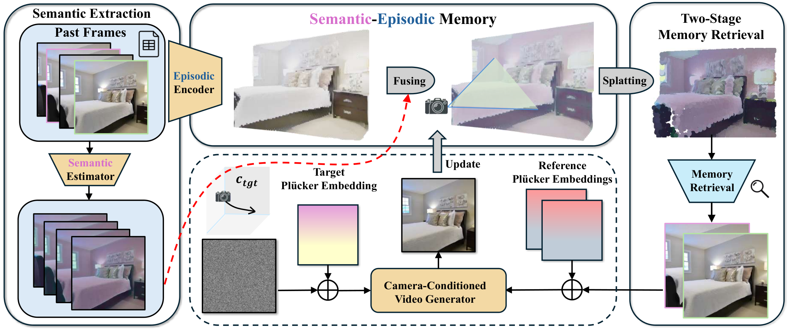

Paper Notes
Task and Memory Representation
本文针对 camera-conditioned video generators。输入是参考图像和用户指定的相机轨迹，输出沿轨迹生成的新视角视频。单纯按相机位姿找最近帧，可能选到几何上相近但内容不关键、或目标区域不可见的历史。
SE-Mem 将历史观测组织为结构化三维表示，并为元素附加 semantic importance。这里的 semantic 更接近“该区域对场景一致性和观感有多重要”，不是开放词汇地图中的类别标签，也不等于实例身份。
评估同时看视觉质量和几何一致性：PSNR、SSIM、LPIPS，以及从生成帧估计相机轨迹后的旋转和位移误差。回访轨迹专门测试重新看到旧区域时能否恢复内容。
Paper Notes
Reading the Original Framework

Changsong Lei et al. · Original figure, unmodified · CC BY 4.0 · Paper & Caption ↗
图 2 的主路径可按三步理解：先把历史帧与相机信息放入三维 memory；再用目标相机的几何关系做 primary retrieval；最后用 semantic importance 和 visibility 选择 complementary frames，将检索到的图像和相机参数送入原有生成器。生成器架构不改，memory 负责上下文选择。
重要性图由 semantic distinctiveness、object-level information density 和 local structure 组合。前两者偏向选择有区分度且包含对象信息的区域，局部结构强调边缘与纹理。该评分改变的是“哪些历史被读出”，不是把语义向量直接写成几何。
Paper Notes
Two-Stage Retrieval and Budget
第一阶段依据目标视角和三维可见性筛掉与目标不相容的历史，避免只按时间窗口读取。第二阶段在固定总 context budget 内选主帧与互补帧；互补帧用于补足主帧未覆盖的高重要区域。
固定预算使结果有明确解释：增加 complementary frames 会减少 primary frames。作者的表 7 显示一个互补帧优于零个或更多个的设定；因此“记忆越多越好”不成立。
I(r) = I_distinctive(r) + I_object(r) + I_local(r) Retrieve = PrimaryGeometry(target view) + Complementary(semantic importance, visibility)
Paper Notes
Training, Inference, and Compatibility
论文把 SE-Mem 作为检索模块接到 SEVA、ViewCrafter 和 MVGenMaster 的既有接口，提供历史图像与相机参数；没有为每个生成 backbone 重新设计主干。推理时根据目标相机轨迹查询 memory，再把所选上下文送入冻结或既有的 camera-conditioned generator。
这和 LingBot-Map 的启发在于：如果语义只改变历史选择，几何收益必须在相同上下文预算下比较；不能把额外帧数或更大的生成器当成语义收益。若把语义融合到 LingBot-Map 的写入前 token，则还要区分“内容评分改善读出”和“语义参与状态形成”这两个机制。
Paper Notes
Experiments and Evidence
General synthesis 在 RealEstate10K 使用 32 帧轨迹，在 Tanks-and-Temples 也做相同评价。回访实验先前进 100 帧，再沿原路返回，形成 200 帧序列，直接测试恢复早期内容。SE-Mem 在 RealEstate10K general synthesis 的 PSNR/SSIM/LPIPS 为 18.46/0.647/0.335，Tanks-and-Temples 为 15.25/0.541/0.489；但部分位移和几何指标由其他方法更好。
RealEstate10K 回访的检索消融从 sliding window 13.05 PSNR、FOV 13.70、无 semantic 14.01，到完整 SE-Mem 14.22；LPIPS 从 0.472、0.430、0.413 降到 0.387。该对照更接近“语义评分是否有用”，因为总预算与回访任务保持一致。
| Variant | PSNR ↑ | SSIM ↑ | LPIPS ↓ | Rotation ↓ | Translation ↓ |
|---|---|---|---|---|---|
| Sliding Window | 13.05 | 0.496 | 0.472 | 1.120 | 0.637 |
| FOV | 13.70 | 0.516 | 0.430 | 0.904 | 0.488 |
| Ours w/o semantic | 14.01 | 0.531 | 0.413 | 0.879 | 0.502 |
| Ours w/ semantic | 14.22 | 0.549 | 0.387 | 0.853 | 0.499 |
Paper Notes
Limitations and Transfer
作者在 in-the-wild 图像上只给定性结果，没有 ground-truth 数值；在 Tanks-and-Temples 的所有几何指标也不是统一最优。语义重要性图依赖生成器可接受的历史帧接口，不能直接说明像素级语义会改善三维重建。
对 LingBot-Map 最有用的实验模板是固定 memory token 数和解码预算，比较几何检索、语义重要性检索、以及写入前语义融合。若只做最终输出端融合，应该把它作为当前帧增强基线，而不是 memory 机制。
此外，论文的语义分数偏向内容显著性和视觉信息密度；它没有证明“对象类别正确”会导致更好的深度。需要单独报告深度、轨迹、完整度和语义一致性。
Paper Notes
Reading Conclusions
SE-Mem 证明的是：在生成式视角合成中，带语义重要性的历史筛选可以提升感知质量，并在部分设置中改善几何一致性。它并未证明任何形式的语义融合都能改善三维重建。
它给 LingBot-Map 的具体启发是把语义作用写成可检验的 memory decision：语义究竟影响写入、地址、读取，还是只影响输出？每个位置都需要同预算消融，才能避免把“多看了更好的帧”误读为语义本身的作用。
Discussion
Reading Questions
Is SE-Mem an open-vocabulary 3D map?
不是。它维护结构化历史观测并计算重要性，用于生成器上下文检索；论文没有把开放词汇类别特征作为三维地图查询接口。
Does better LPIPS prove better geometry?
不证明。LPIPS 是感知相似度，作者同时报告相机姿态误差，并明确部分几何指标由基线更好。
What should be transferred to LingBot-Map first?
固定缓存容量，先做语义参与写入前融合与只在读取端使用语义的对照，再分别测未来帧几何和语义一致性。
References
First submitted 2026-10-31. Read 2611.00658v1 on 14 November 2026. One original figure is reproduced under CC BY 4.0. Experimental results are reported by the authors and have not been independently reproduced.
Verified on 2026-11-14. Paper results refer to the linked versions. Repository references were checked on this date.